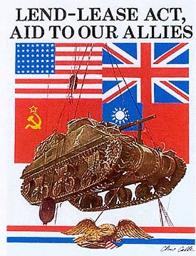
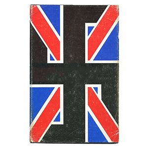
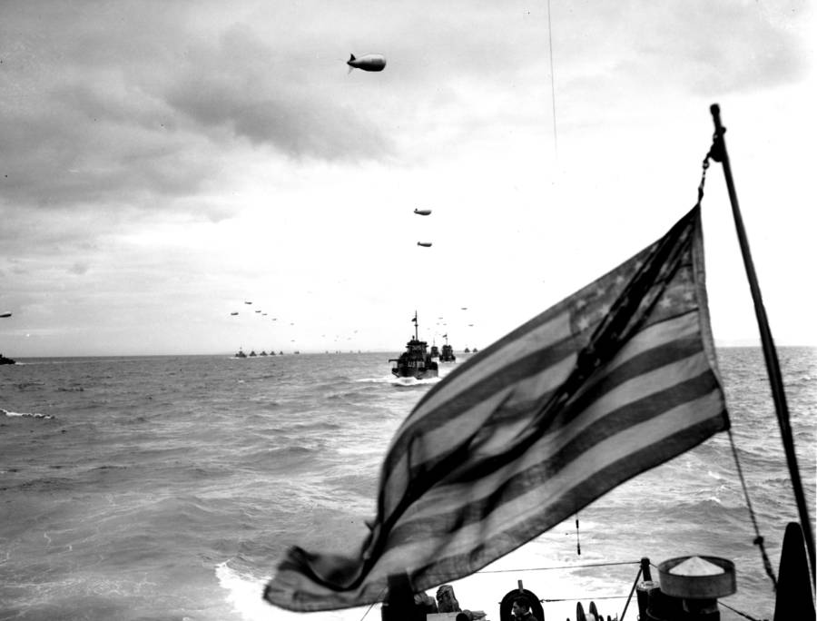
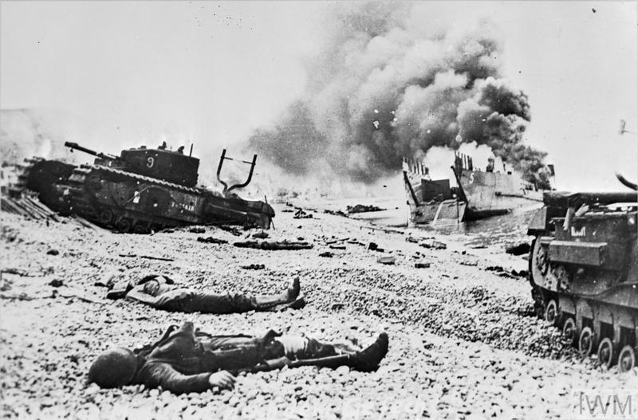
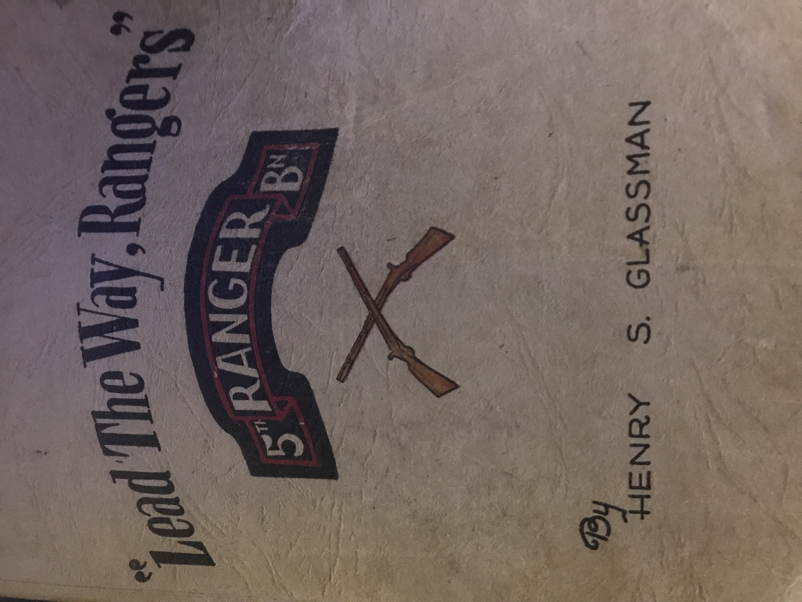

The Attack on Normandy Beach also known as D-Day accured during WW2 when Adolf Hitler gained power in Germany.
The attack on Normandy Beach was carried out by allied soldiers on June 6, 1944. The Americans and British invaded the beaches of Normandy, France where German soldiers were fortified on the beach called the Atlantic Wall.
Context Before the actual invasion, the reason for even thinking of the invasion of Normandy was the uprising of Nazi Germany. Germany’s leader during the time, Adolf Hitler, began to issue the invading of neighboring countries of Germany to gain power. These countries were Poland, Netherlands, Belgium, Luxembourg and the biggest reason France. After the invasion of France by Germany countries became worried of what Germany will do next. This caused the creation of an alliance between the U.S., Australia, the Soviet Union, and Britain. This was called the Lend Lease Act. This act was issued to create an alliance between multiple countries so that these countries could stand a chance against Germany.

Much time before the initial invasion of the northern beaches of France the U.S. and Britain collected a surplus of information to assist them in their attack. This included the creation and execution of the Double cross system or the XX community. This System was created by Juan Garcia or “Garbo” who was the leader of this operation. Garbo disguised himself as a German spy that worked for Germany and was awarded by Germany for his “efforts”. Garbo fed Germany false information to the Nazis and collected vital information that was necessary for the invasion.

Before the attack, Britain was thinking of a way to have Germany looking the opposite direction when they invaded, but it almost seemed impossible to do this with the current technology of the Nazis. However it was and how they did it was quite simple. They accomplished this by creating an army of men, airplanes, and tanks in Switzerland, or that’s what they wanted Germany to think. What they actually did was create an entirely fake army of wooden dummies, wooden aircrafts and inflatable tanks to create the illusion of a real army that was really never there. To push it even farther they broadcasted a live video of this fake army replacing the fake men with real ones with the intent of mass deception on Germany. Triumph Although the mass amount of losses suffered by the U.S. and Britain the invasion was successful enough to show that the U.S. was there to stay in Normandy. The U.S. during the first wave of soldiers coming in on amphibious vehicles from the ocean onto the beach by surprise was massively discombobulated by the stormy weather and choppy waters. However this did not just include the ships this also included the paratroopers who were off schedule or just missed their target. Many ships landed on non designated locations and many paratroopers were either shot down by Germans or broke their legs on impact due to the lateness of their deployment of their parachute, but not all attacks missed completely, but a sure amount did actually make it to the beach side to soon be pinned down by the machine guns of the fort. Many soldiers pinned down with the little cover provided by the beach side and sand called for reinforcements which were soonly deployed. Additionally Paratroopers were the sole reason the fort was able to be seized, since the front line was pinned down by the machine gunners the paratroopers dropped in on top of them to take out the gunners so the front line could move up to provide additional support. In less than a week after the initial attack over 326,000 troops, 50,000 vehicles, and 100,000 tons of equipment arrived at the Beachfront over time. These reinforcements and assist from paratroopers allowed the trops to push the front lines and secure the beach.

Tragedy Before the invasion they had to confirm the weather was optimal for the next few days or else the attack would have to be delayed for over 2 months which was not good news. One weather man came to the leader of the operation, Eisenhower, stating that the weather was optimal for the invasion, this was the worst mistake that could ever be made in this time of crisis. The soldiers later realized that the weather was revealed to be stormy with choppy waters during the invasion. This caused the loss of may men on these ships and the loss of direction for these ships ultimately causing them to land on undesignated locations for the attack. This caused a lack of troops on the front line, but this did benefit some. For example a ship landed on a beach that was west of Normandy that was completely baron with no Germany troops defending it. The commander of this unit stated that this would’ve been the best place to land since the land was hard and the element of surprise was on their side. This commander then proceeded to lead his troops into battle capturing multiple artillery points. Including the U.S. and Britain both suffered heavy losses from this attack however the losses do not outweigh the gains considering that the battle was one that day.

The Fifth Ranger Infantry Battalion The fifth Ranger Infantry Battalion was activated on September 1, 1943 under provision of an Army Ground Forces letter, which included in part the following directive:“All personnel will be chosen from volunteers of above normal mental and physical condition. Personnel should be under 28 Years of age and should meet all physical requirements for that of a parachutist, excepting that he may not be required to jump from an airplane in flight.”

Impact The invasion of Normandy impacted future war tactics, how wars were fought forever and marked the beginning of the end of Nazi Germany. For example the events of D-Day revealed how horrifying war can really be and how devastating it can be. Additionally after the success of the Allies Germany was suffering great losses soonly to only lose more, due to the battles of WWII. Similarly this operation made many technological advancements including the creation of amphibious vehicles, the horsa glider, mulberry harbors, and the pluto. Overall D-Day was massively impactful in many ways changing war forever. Conclusion Overall the invasion of Normandy or Operation Overlord was a successful attack forcing Germany off of the beach front. For example the deception used to deceive Germany worked exceptionally well, causing all German forces to be in the wrong places at wrong times. Similarly the invasion was also executed well, even with great numbers of soldiers being lost in navigation the battle was not lost. Consequently this victory resulted in the pushing of German forces out of France, ultimately ending WWII and giving the Allies that epic victory royale.
Only cool kids will understand this: Rw3Ujwj%nx%httq& If you want to findout go to my Projects page and install python 3.7 and encryption code.